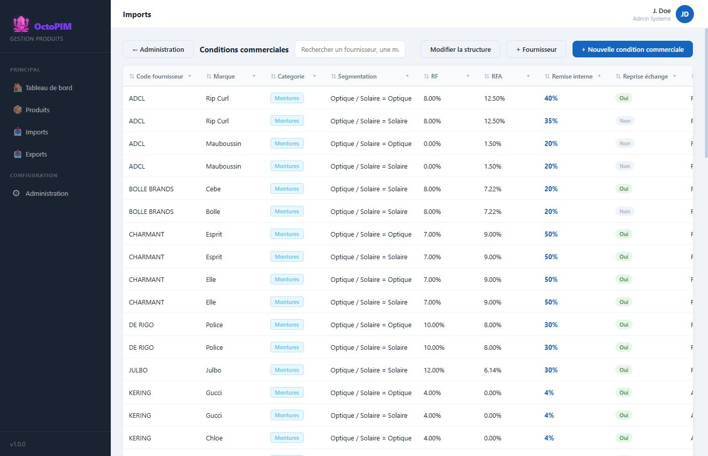

Conditions commerciales
Une condition commerciale n’est pas un attribut duplique : c’est une ligne d’accord marque × fournisseur × type de produit × segmentation (ex. Optique / Solaire), avec RF, RFA, remises, reprise, livraison.
Qu’est-ce qu’une condition commerciale ?
C’est le barème négocié avec un fournisseur pour une marque, dans une famille et une segmentation. Sur la fiche produit, ces valeurs se retrouvent dans l’onglet Conditions commerciales lorsque la marque et le fournisseur correspondent.

A quoi ça sert ?
- Centraliser RF, RFA, remise interne, reprise échange, conditions de livraison.
- Eviter de resaisir le barème sur chaque produit.
- Alimenter les calculs de tarif (PA interne, etc.).
Comment ça marche
Diagramme Mermaid (macro Confluence)
flowchart LR P[Produit : marque + fournisseur + categorie + segmentation] P --> M[Recherche de la ligne d'accord] M --> L[RF, RFA, remise interne, reprise, livraison]
- Maquette Boutons + Fournisseur et + Nouvelle condition commerciale.
- La liste des marques est unique et s’enrichit quand on saisit une nouvelle marque (produit ou condition).
- Les pourcentages s’affichent en % (stockage decimal 0–1).
Regles
RG-CC-01 — Une ligne d’accord est unique pour la combinaison marque × fournisseur × type × segmentation.
RG-CC-02 — Marque n’est pas une liste figee : toute nouvelle valeur enrichit le referentiel.
RG-CC-03 — Quand un produit a une marque et un fournisseur qui matchent une ligne d’accord, la remise interne de cette ligne est reportee sur la fiche et compte dans la completion.
RG-CC-02 — Marque n’est pas une liste figee : toute nouvelle valeur enrichit le referentiel.
RG-CC-03 — Quand un produit a une marque et un fournisseur qui matchent une ligne d’accord, la remise interne de cette ligne est reportee sur la fiche et compte dans la completion.